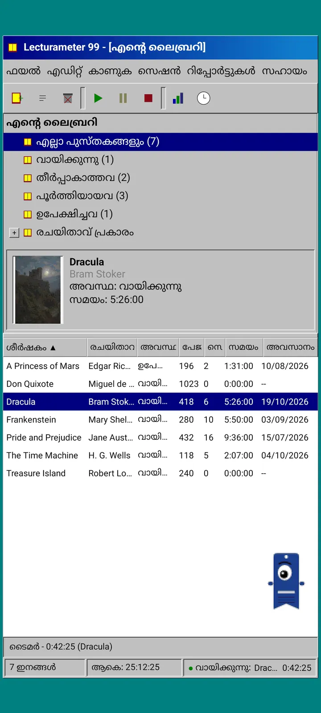
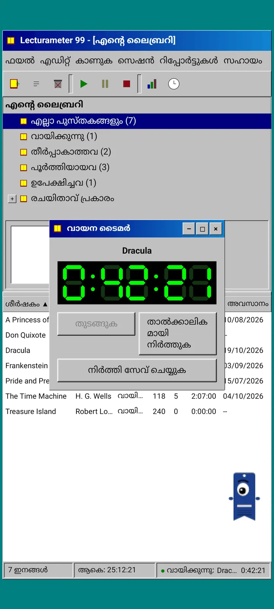
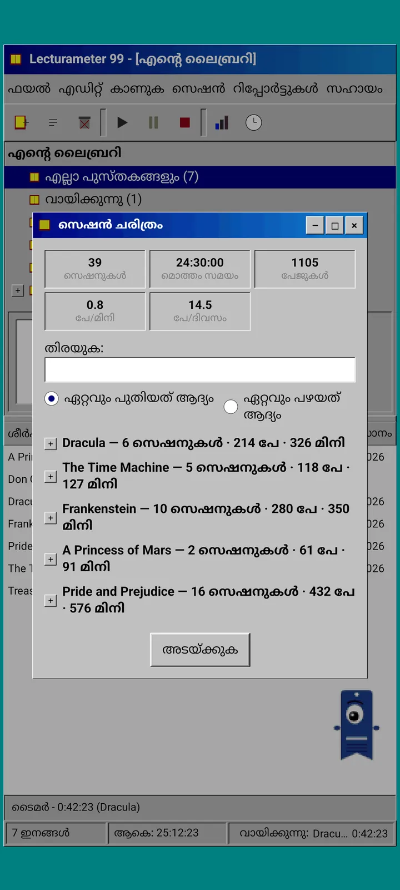
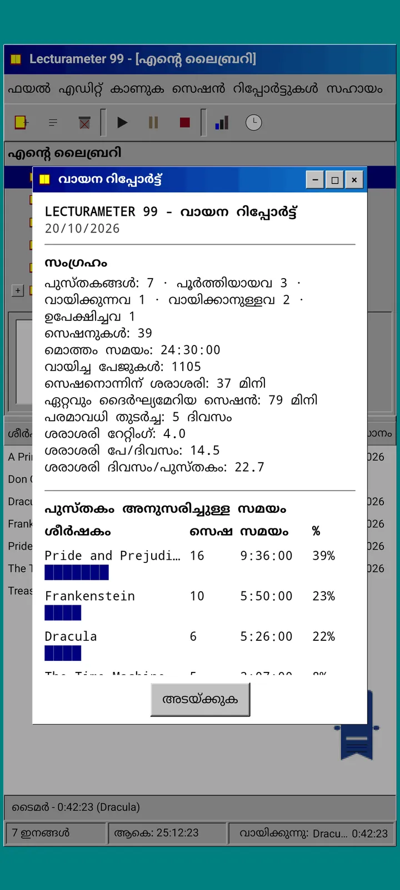
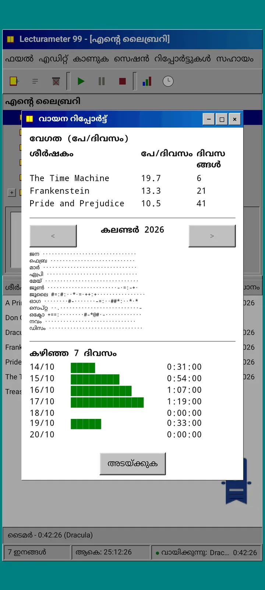
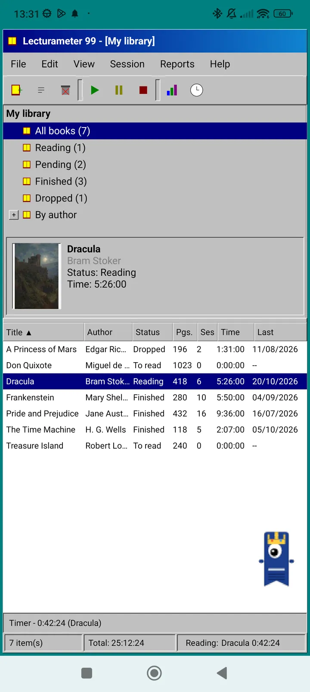
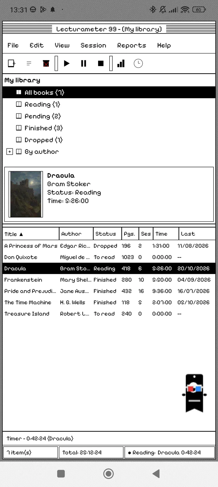

ബ്ലോഗ് · 2026-09-24
Lecturameter 99, മുമ്പ് Lecturameter 1999: പഴയ പിസി പ്രോഗ്രാമായിരുന്നെങ്കിൽ Lecturameter എങ്ങനെ ഇരിക്കും?
വിൻഡോകൾ, മെനുകൾ, ടേബിളുകൾ, LCD ടൈമർ എന്നിവയുള്ള Lecturameter-ന്റെ ഒരു ബദൽ ക്ലയന്റ്, നിങ്ങളുടെ യഥാർത്ഥ ബാക്കപ്പുകൾ തുറക്കുന്നു. എങ്ങനെ ഉണ്ടായി, എന്തുണ്ട്, മനഃപൂർവം എന്ത് ഒഴിവാക്കി. ഇപ്പോൾ App Store-ൽ; Google Play ഉടൻ.
Lecturameter 99 (മുമ്പ് Lecturameter 1999) കുറച്ചു മാസം വേവിച്ചുകൊണ്ടിരുന്നു. ഞാൻ ഇത് കഷ്ണം കഷ്ണമായി, അവിടെയും ഇവിടെയും, തിരക്കില്ലാതെയും പദ്ധതിയില്ലാതെയും നിർമ്മിച്ചു. iOS പതിപ്പ് ഞാൻ കരുതിയതിലും ലളിതവും പൂർത്തിയാക്കാൻ ഇടം തരുന്നതുമാണെന്നു കണ്ടതിനു ശേഷമാണ് ഗൗരവമായി എടുത്തത്.
ഇത് ഒരേയൊരു പരീക്ഷണമല്ല. Lecturameter ലോകത്തിലെ മറ്റ് പ്രോജക്റ്റുകളും മനസ്സിലുണ്ട്, ചിലത് വളരെ മുന്നോട്ടുപോയവ, ചിലത് ഇപ്പോൾ തുടങ്ങിയതേയുള്ളൂ. അവയിൽ മിക്കതും ഒരുപക്ഷേ ഒരിക്കലും വെളിച്ചം കാണില്ല.
ഇത് എവിടെ നിന്ന് വന്നു?
കുറച്ചുകാലമായി ഞാൻ ചുറ്റിത്തിരിഞ്ഞിരുന്ന ഒരു പരീക്ഷണത്തിൽ നിന്നാണ് എല്ലാം തുടങ്ങിയത്.
Lecturameter-നെ ആദ്യം മുതൽ പലതവണ, തീർത്തും വ്യത്യസ്തമായ രൂപകൽപ്പനാ ആശയങ്ങളിൽ പുനർനിർമ്മിക്കുക എന്നതായിരുന്നു ആശയം. യഥാർത്ഥ ആപ്പിൽ തൊടാതെയും അതിനു പകരമാകാൻ ഉദ്ദേശിക്കാതെയും. ഏഴ് പതിപ്പുകൾ ഉണ്ടായി. ഒന്ന് 2016-ലെ ഒരു Android ആപ്പിനെ അനുകരിച്ചു, മറ്റൊന്ന് 2036-ൽ ഇത് എങ്ങനെയിരിക്കുമെന്ന് ഭാവനയിൽ കണ്ടു, മറ്റൊന്ന് ലൈബ്രറിയെ പുസ്തകഷെൽഫാക്കി മാറ്റി, നിങ്ങൾ വായിക്കുന്തോറും പുസ്തകങ്ങളുടെ മുതുക് കട്ടിയാകുന്ന രീതിയിൽ, വേറൊന്ന് രണ്ട് സ്ക്രീനുള്ള ഹാൻഡ്ഹെൽഡ് കൺസോളിനായി രൂപകൽപ്പന ചെയ്തു.
എനിക്ക് ഏറ്റവും ഇഷ്ടപ്പെട്ടത് 1999 ആയിരുന്നു. തൊണ്ണൂറുകളുടെ അവസാനത്തെ ഒരു ഡെസ്ക്ടോപ്പ് പ്രോഗ്രാം: ഇടതൂർന്നത്, ഉപയോഗപ്രദം, എല്ലാം വിൻഡോകളിലും മെനുകളിലും ടേബിളുകളിലും. ഇത് രസകരമായ ഒരു അഭ്യാസമായി, ഓരോ ചെറിയ ഭാഗമായി പൂർത്തിയാക്കി, അടിയിൽ യഥാർത്ഥ Lecturameter ഡാറ്റയുള്ള ഒരു സമ്പൂർണ്ണ ക്ലയന്റ് ആക്കാൻ ഞാൻ തീരുമാനിച്ചു.
ഇത് എന്താണ്?
Lecturameter 99 ഒരു സ്വതന്ത്ര ആപ്പാണ്, Lecturameter-ൽ നിന്ന് വേറിട്ടത്. ഇത് തുറക്കുമ്പോൾ ടീൽ നിറമുള്ള ഡെസ്ക്ടോപ്പിനു മുകളിൽ വലുതാക്കിയ ഒരൊറ്റ വിൻഡോ കാണാം. മുകളിൽ ടൈറ്റിൽ ബാറും മെനുകളും: ഫയൽ, എഡിറ്റ്, കാണുക, സെഷൻ, റിപ്പോർട്ടുകൾ, സഹായം. അതിനു താഴെ പിക്സലേറ്റഡ് ഐക്കണുകളുള്ള ഒരു ടൂൾബാർ. നടുവിലെ ഭാഗം രണ്ടായി വിഭജിച്ചിരിക്കുന്നു: ലൈബ്രറിയുടെ ട്രീയും പുസ്തകച്ചട്ടയോടുകൂടിയ പ്രിവ്യൂ പാനും, ഓരോ പുസ്തകത്തിനും ഒരു വരിയുള്ള ടേബിളും. ഏറ്റവും താഴെ സ്റ്റാറ്റസ് ബാർ, ഇനങ്ങളുടെ എണ്ണം, ആകെ സമയം, നിങ്ങൾ വായിക്കുന്ന പുസ്തകം എന്നിവയോടെ.


Lecturameter-ലെ അതേ ഡാറ്റ
പരീക്ഷണത്തെ ഉപയോഗപ്രദമായ ഒന്നാക്കി മാറ്റുന്ന ഭാഗം ഇതാണ്. 1999-ന്റെ പുറംചട്ടയ്ക്കു കീഴിൽ യഥാർത്ഥ Lecturameter ഡാറ്റ മോഡൽ ഉണ്ട്, അതേപടി പകർത്തിയത്: അതേ പുസ്തകങ്ങൾ, അതേ സെഷനുകൾ, അതേ സ്ഥിതികൾ, റേറ്റിംഗുകൾ, കുറിപ്പുകൾ. ഇത് എക്സ്പോർട്ട് ചെയ്യുന്ന ബാക്കപ്പ് Lecturameter എക്സ്പോർട്ട് ചെയ്യുന്ന അതേ ഫയലാണ്, ഇറക്കുമതി ചെയ്യുന്നതും അതുതന്നെ.
പ്രായോഗികമായി ഇതിനർത്ഥം നിങ്ങൾക്ക് ഫയലിൽ പോയി ബാക്കപ്പ് ഇറക്കുമതി ചെയ്ത് നിങ്ങളുടെ മുഴുവൻ ലൈബ്രറിയും ഒരു 1999 ടേബിളിൽ കാണാം എന്നാണ്. ഒരാഴ്ച LCD ടൈമറുമായി വായിക്കൂ. എക്സ്പോർട്ട് ചെയ്യൂ. പുതിയ സെഷനുകളുമായി, വഴിയിൽ ഒരു ഫീൽഡ് പോലും നഷ്ടപ്പെടാതെ ആധുനിക ആപ്പിലേക്ക് മടങ്ങൂ. Goodreads CSV-യും അകത്തേക്കും പുറത്തേക്കും പോകുന്നു.
പുസ്തക തിരയൽ Lecturameter-ലേതു തന്നെയാണ്: ആപ്പിന്റെ സ്വന്തം കാറ്റലോഗും Google Books-ഉം ചോദിച്ച്, ശീർഷകം, രചയിതാവ്, പേജുകൾ, ISBN, പുസ്തകച്ചട്ട എന്നിവ പൂരിപ്പിക്കുന്നു. പുസ്തകച്ചട്ട പോസ്റ്ററൈസ് ചെയ്ത് സ്മൂത്തിംഗ് ഇല്ലാതെ വരയ്ക്കുന്നതിനാൽ അത് അക്കാലത്തെ ഒരു GIF പോലെ തോന്നും.
സെഷനുകൾ, ചരിത്രം, റിപ്പോർട്ട്
വായനയുടെ ഒഴുക്ക് Lecturameter-ന്റേതു തന്നെയാണ്, വിൻഡോകളിലേക്ക് മാറ്റിയത്. ടേബിളിൽ ഒരു പുസ്തകം തിരഞ്ഞെടുത്ത് പ്ലേ ബട്ടൺ അമർത്തുന്നു. കറുപ്പിൽ പച്ച നിറത്തിലുള്ള സെവൻ-സെഗ്മെന്റ് ഡിസ്പ്ലേയോടെ ടൈമർ വിൻഡോ തുറക്കുന്നു. നിങ്ങൾക്കത് നീക്കാം, ടാസ്ക്ബാറിലേക്ക് ചെറുതാക്കാം, അല്ലെങ്കിൽ അടയ്ക്കാം: സമയം സ്റ്റാറ്റസ് ബാറിൽ എണ്ണിക്കൊണ്ടിരിക്കും.
നിർത്തുക അമർത്തുമ്പോൾ സെഷൻ സേവ് ഡയലോഗ് തുറക്കുന്നു: തീയതി, മിനിറ്റ്, ആദ്യത്തെയും അവസാനത്തെയും പേജ് (അല്ലെങ്കിൽ ശതമാനം), അഭിപ്രായം. സെഷൻ പേജുകൾ, ശതമാനം അല്ലെങ്കിൽ സമയം മാത്രം അനുസരിച്ച് രേഖപ്പെടുത്താം, നിങ്ങൾ ടൈപ്പ് ചെയ്യുമ്പോൾ സംഗ്രഹം പേജുകളും വേഗതയും കണക്കാക്കുന്നു. പുസ്തകത്തിന്റെ അവസാന പേജിൽ എത്തിയാൽ തീർത്തോ എന്ന് ചോദിക്കും. കൈകൊണ്ടുള്ള സെഷനുകൾ സെഷൻ മെനുവിൽ നിന്ന് ചേർക്കാം.
ചരിത്രം സെഷനുകളെ പുസ്തകം അനുസരിച്ച് പ്ലസും മൈനസുമുള്ള ഒരു ട്രീയിൽ ഗ്രൂപ്പ് ചെയ്യുന്നു, മുകളിൽ അഞ്ച് കണക്കുകളോടെ: സെഷനുകൾ, ആകെ സമയം, പേജുകൾ, മിനിറ്റിൽ പേജുകൾ, ദിവസത്തിൽ പേജുകൾ. ഒരു സെഷൻ എഡിറ്റ് ചെയ്യാൻ അതിൽ രണ്ടുതവണ ടാപ്പ് ചെയ്യുക, ഇല്ലാതാക്കാൻ ദീർഘനേരം അമർത്തുക.
സ്ഥിതിവിവരക്കണക്കുകൾ മോണോസ്പേസ്ഡ് ടെക്സ്റ്റിലുള്ള ഒരു വായനാ റിപ്പോർട്ടാണ്, പ്രിന്ററിൽ നിന്ന് വന്നതുപോലെ: ഏറ്റവും നീണ്ട സ്ട്രീക്കും ശരാശരി റേറ്റിംഗുമുള്ള സംഗ്രഹം, ബ്ലോക്ക് ബാറുകളോടെ ഓരോ പുസ്തകത്തിനുമുള്ള സമയം, ദിവസത്തിൽ പേജുകളിലെ വേഗത, ഓരോ ദിവസവും വായിച്ച പേജുകൾ അനുസരിച്ച് അക്ഷരങ്ങളിൽ വരച്ച വർഷത്തിന്റെ കലണ്ടർ, കഴിഞ്ഞ ഏഴ് ദിവസങ്ങൾ.



Pagi 99
Pagi-യും 1999-ലേക്ക് യാത്ര ചെയ്യുന്നു. ഇത് അതേ ഒറ്റക്കണ്ണുള്ള ബുക്ക്മാർക്ക് രൂപമാണ്, പക്ഷേ പിക്സലേറ്റഡ്, ആ കാലത്തെ ഓഫീസ് അസിസ്റ്റന്റുകളെപ്പോലെ സ്ക്രീനിൽ സ്വതന്ത്രമായി നടക്കുന്നു. നിങ്ങൾക്ക് വിരൽകൊണ്ട് വലിച്ചുനീക്കാം, ടാപ്പ് ചെയ്താൽ ഒരു ചെറിയ വാചകം പറയും, നിങ്ങൾ എന്തു ചെയ്യുന്നു എന്നതിനനുസരിച്ച് ഭാവം മാറും: പുസ്തകം തിരയുമ്പോൾ ചിന്തിക്കും, ടൈമർ ഓടുമ്പോൾ വായിക്കും, സെഷൻ സേവ് ചെയ്യുമ്പോഴോ പുസ്തകം പൂർത്തിയാക്കുമ്പോഴോ ആഘോഷിക്കും.
ആപ്പിന്റെ ടിപ്പുകൾ Pagi-യിൽ ഉറപ്പിച്ച മഞ്ഞ ബലൂണുകളിൽ ഓരോന്നും ഒരു തവണ മാത്രം പ്രത്യക്ഷപ്പെടും. അവ വീണ്ടും കാണണമെങ്കിൽ, സഹായം എന്നതിനു കീഴിൽ, ഇന്നത്തെ ടിപ്പിൽ ഉണ്ട്.


ഒഴിവാക്കിയത്
Lecturameter 99 മനഃപൂർവം ലളിതമാണ്. ഇതൊരു പരീക്ഷണമാണ്, തത്വത്തിൽ ഇനി വികസിപ്പിക്കില്ല. പുതിയ ഫീച്ചറുകൾ Lecturameter-ൽ വന്നുകൊണ്ടിരിക്കും.
ഇത് നിർമ്മിക്കുമ്പോൾ വായനയുടെ ഒഴുക്കിനെ ബാധിക്കാത്തതൊന്നും വേണ്ടെന്ന് ഞാൻ തീരുമാനിച്ചു. അതുകൊണ്ടാണ് Lecturameter 99-ന് Pro ഇല്ലാത്തത്. നിങ്ങൾ കാണുന്നതാണ് നിങ്ങൾക്ക് ലഭിക്കുന്നത്.
ഇത് 50 ഭാഷകളിൽ ലഭ്യമാണ്.
എവിടെ നിന്ന് നേടാം
ഇത് ഇപ്പോൾ iPhone-നായി App Store-ൽ സൗജന്യമായി ഉണ്ട്. Android പതിപ്പ് പിന്നീട് Google Play-യിൽ വരും: ഇതുവരെ പൊതു ലിസ്റ്റിംഗ് ഇല്ല. സ്റ്റോറുകൾ ഇപ്പോഴും മുൻ പേരായ Lecturameter 1999 എന്ന പേരിൽ കാണിച്ചേക്കാം. Google Play-യിൽ എത്തുമ്പോൾ ഇവിടെയും X-ലും Reddit-ലും അറിയിക്കും.
അതുവരെ Lecturameter, Lecturameter തന്നെ, അതിന്റെ തീമുകളും വെല്ലുവിളികളും ബിങ്കോകളുമായി. 99 പതിപ്പ് അതേ ഡാറ്റ നോക്കാനുള്ള മറ്റൊരു വഴിയാണ്.
കാത്തിരിക്കുമ്പോൾ, Android-ൽ Lecturameter
വായന തുടരൂ: Lecturameter 99 · വായനാ സമയമോ പേജുകളോ · വായനാ ടൈമർ